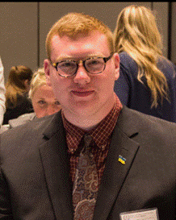
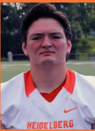
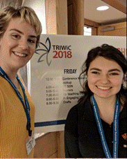
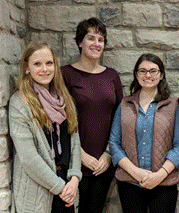
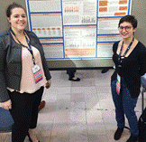
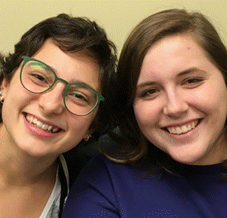

Student Research Conference: Minds at Work
Wednesday, April 11, 2018
Heidelberg 2018 Student Research Conference: Minds at Work Abstracts
Ericka Kaimer
Sponsored by: Emily Isaacson
A Psychoanalysis of Winnie the Pooh: An Overview
Presentation
This research is based on the psychoanalytic theory that discusses the various psychological disorders that the characters of Winnie the Pooh face. The story of Winnie the Pooh was written by A.A. Milne, is a collection of stories, told by Christopher Robin, of an enchanted bear dressed in a red shirt who adores anything that has to do with honey. He has many other small animal friends that he goes on adventures with and always goes to Christopher Robin for advice. There are many inferences regarding the mental capacities of these characters and it is understandable. With so many different psychological deficits in today’s time, it is not uncommon that they would be in the folds of characters of a children’s story.
Clarissa Jones(HAMMEL FINALIST)
Sponsored by: Courtney DeMayo
Disability in Ancient China as Described in Medical Texts
Presentation
This project was an attempt to reconstruct Ancient Chinese views on disability as evidenced in medical texts from the time. It is based heavily on primary source research, and draws from medical texts, Buddhist writings on medicines, and recipes for medicines. There is very little previous scholarship in this area, sand what little that exists did not focus on medical texts. This research shows that ancient China had a very complex way of looking at disability, and had some surprising views, especially regarding things such as mental illness. This research highlights the complexities of Ancient Chinese medicine fed into their views on disability, and outlines what those views were.
Megan Gwirtz
Sponsored by: Carol Dusdieker
Americana through a Modernist Lens in Copland's Rodeo
Presentation
Composers in the Twentieth century sought innovation and individuality to compete in a musical hierarchy overrun with past masters. Aaron Copland (1900-1990) found his unique voice in the Nationalist branch of Modernism. During his composing career, he explored many different styles, but found a home in creating the soundtrack for America. Through his ballet Rodeo, Copland creates a work that accentuates the Midwest style and values and creates a standard for classical music of America. The Nationalism that bleeds through his works can be found in every folk tune and dance move to create an image through the music. Aaron Copland showcased his newfound Americana voice through innovative techniques such as painting a musical picture, and unique melodic figures and phrases, like trombone glissandos and abrupt wind sounds, while also showcasing the past musical traditions of form and instrumentation in his ballet, Rodeo.
Abigail Reed
Sponsored by: Traci Stark
Psychology, Feminism, and Film; Is the Industry Keeping Up to Date?
Presentation
Feminism is seen as a recognition of women’s oppression and discrimination in society. Since the 1920s there have been three separate waves upholding an antisexist stance aimed at securing permissible rights of all intersections of women while liberating both men and women from their stereotypical gender roles. Reasons for not supporting the Women’s Movement stem from misconceptions and poor representation. These harmful ideas come from a vast range of outlets such as social media, literature, and film. When specifically taking a look into the film industry, there has been a notable shift in the portrayal of women however it is not all positive. While women have been represented more frequently since the beginning of the movement, some films such as Sixteen Candles, She’s all That, 10 Things I Hate About You, John Tucker Must Die, and She’s the Man may be causing more harm than good.
Taylor Robinson
Sponsored by: Neil Sass
Kids Count Too Inc. Foster Care and Adoption Agency
Poster
I will be presenting my experience as an intern with a foster care agency in Bowling Green. I served as an intern with Kids Count Too this past fall and learned many valuable skills that will help in my future career as a Social Worker.
Penelope Christian
Sponsored by: Mary Garrison
The Kilikilik Feasibilty Study
Poster
The Kilikilik is the student newspaper at Heidelberg University with a long history as a print publication. However, as print newspapers have moved online and are accessible by smartphones, is it feasible for The Kilikilik to move online? This project presents the findings of the research completed by the MED 369A Practicum in Fall, 2017, including: 1) a summary of the past publication, content, and advertising history of The Kilikilik; 2) a competitive analysis of colleges and universities that have both print and online student news; 3) a cost analysis of both print and online news; and 4) recommendations for policies, site architecture, timelines, and staffing to accomplish an online news service.
Amanda Blanton
Sponsored by: Marc O’Reilly
Kawkiutl Children’s Book
Presentation
The retelling and illustration of a Kawakiutl tale of a blind man who regains his sight, made into the form of a children’s book.
Olivia Hipp
Sponsored by: Ryan Musgrave
Stimulants: How Much Is Too Much
Poster
This study was performed to help inform readers about the possible risks of consuming too much of a stimulant during physical activity. Many students consume some type of stimulant everyday, but how many of them know the risks of consuming too much? Many studies show stimulants can have a positive impact on performance, but can also have a negative one if taken in a large dose. This topic is important because it provides students with critical information regarding how much caffeine they should be consuming to see the benefits, and how much caffeine is unsafe to consume and will cause negative side effects to performance.
Twelve students from Heidelberg University participated in this research project. The hypothesis of this research project is: the participant’s reaction time will increase, fifteen minutes after caffeine has been ingested.The participants’ reaction time was measured using an online reaction time test. The results of this experiment showed an increase in reaction time after consuming caffeine. This means the participants’ reaction time became slower. The experiment concluded that consuming a large dose of caffeine had a negative effect on the performance of the participants.
Madison Crow
Sponsored by: David Kimmel
Time in Salman Rushdie’s Midnight’s Children
Presentation
Salman Rushdie’s Midnight’s Children follows the life of Saleem, a boy who was born at midnight on the day of India’s independence. The significance of his birth is explained throughout the novel, but it becomes evident that time plays a crucial role in the narrative. Timing in this novel is important and the story would not be the same if the element of time was taken away. This presentation will focus on Rushdie’s use of time and how time is significant in this novel.
Katherine Brickner & Austin Ball
Sponsored by: Jena Suffel
Stretching and its Effects on Strength
Poster
Objective: To further analyze stretching, with a focus on static stretching, and its effects on strength in college students. Methods: Five male students and five female students were randomly selected from a pool of students that fit the necessary requirements to be a part of the study. We taught them a static stretching routine that was instructed to be done three times a day for the duration of the three week long study. We recorded their final and initial max out weights for squat and bench press. The students were instructed to perform strength training at least three times a week and to record how many times they completed their workouts each week. We took the data retrieved from the amount of times they performed the static stretching routine, strength training, and their initial and final max outs to see if there is a correlation between static stretching and strength. Conclusion: There was a positive correlation between the amount of times stretched and the increase of strength in both bench press and squat. It is possible that static stretching may result in a gain of strength.
Trevor Summers
Sponsored by: Haseeb Ahmed

A Firm's Value Related to Dividend Policy
Presentation
The objective of this paper is to examine dividend policy as it relates to a firm's value. I hypothesize that a firm’s value can be improved by implementing a dividend payout policy. Some published literature support dividend offerings creating firm value while other publications deem dividend offerings irrelevant. According to the dividend irrelevance theory (Miller and Modigliani,1961), there is no effect from dividends on a company’s stock price. Miller and Modigliani’s assumptions and theory concluded that investors can produce their own returns with or without the company’s set dividend policy. On the contrary, a published data analysis of Romanian firms found that dividend payments created added value to a firm, as investors showed preference in purchasing stock within companies who offered dividends when compared to company’s who did not (Sorin ANTON, 2016).
Robert Atha
Sponsored by: Marc O’Reilly

Bundestagswahl: An Analysis of the German Federal Election
Presentation
An analysis of last year's Bundestagswahl from the perspective of an American political science student abroad. The failures of the Social Democratic Party, the continued success of the Christian Democratic Party, and the rise of alt-right conservatism with the Alternative for Germany Party.
Nicole Tennison & Michael Schuller
Sponsored by: Jena Suffel
Breathe in, Breathe out: Does peak expiratory flow differ before and after exercise?
Poster
This research was conducted to analyze the relationships between heart rate percentage and expiratory flow rate before and after exercise among college aged students. Peak expiratory flow rate measures how fast a person can exhale, and it is used to diagnose lung problems including asthma and chronic obstructive pulmonary disease (COPD). Peak expiratory flow was compared before and after five minutes of treadmill running. Studies have shown that peak expiratory flow can increase over time as a result of regular exercise. The goal of this research was to find a relationship between an increase in heart rate percentage during exercise and an acute increase in peak expiratory flow.
Rafaella Mueller
Sponsored by: Neil Sass
The Epigenetic Consequences of Childhood Trauma and Stressors
Presentation
Early childhood trauma and stress have been documented to have continuous effects
in life. These effects include both biological and psychological disorders. There has been
overwhelming evidence of the link between childhood stressors and trauma and later
psychological issues in adulthood; however, it is only recently that biological consequences of
trauma have been studied and recognized. The biological effects of early life
adversity are at the very beginning stages of discovery. Research so far, though, has shown that
childhood trauma is shown to increase vulnerability not only to mental disorders, but also to
somatic disorders (Marinova, 2017). These effects may be due to mechanisms including gene-
environment interactions and also epigenetic regulation. This topic is extremely important due to
the high number of people that are affected by childhood stressors and traumas. For example,
according to the World Mental Health surveys, physical abuse alone has a prevalence of 8%.
Other types of childhood adversity, including neglect and sexual abuse are at 4.4% and 1.6%
respectively (Marinova, 2017). Due to these statistics it is critically important for research to be
continued on how childhood stressors and trauma can cause changes in gene expression. These
changes are known as epigenetics.
Sydney Calabro, Nicholas Meyer & Jacob Cooper
Sponsored by: Sofey Fugate
Berg Enactus: Combating homelessness in Tiffin, Seneca County
Presentation
(One of our presenters has an away game and leaves campus at 11am, so we would like to request a time before 11am to ensure that she will be able to present)
After listening to the local United Way homelessness task force, a precedent issue in Seneca County became very visible to our group. Three simple steps to solve the invisibility that is homelessness in Tiffin, Ohio: Awareness, Strategize, Build. This was our three-step plan that we have since implemented through our homelessness simulator, clothing drive, and purchasing of house that will soon become a homelessness shelter in Tiffin called the Transformation Life Center (TLC). Come and find out how you can make a difference in our community!
Victoria Hossenlopp(HAMMEL FINALIST)
Sponsored by: Stacey Pistorova
Uncovering Students’ Concept of Identity Through Authentic Classroom Experiences
Presentation
The research presented within the following paper examines the significance of students’ concept of identity and its influence on their education. “How children feel about themselves represents a crucial component in child growth and development. Since children spend most of their growing years in classrooms, research pertaining to children’s self-concept and self-esteem often has been conducted in these settings” (King, 1997, p. 68). The paper will explore how third grade students define themselves through instruction of hands-on learning experiences at Princeton Elementary around the questions: “what can you use to tell the story of you; and how does your family and where you live influence your identity?” The students’ participation in authentic learning experiences within a Social Studies unit will convey the different elements that construct their personal identities. To adequately express the evidence and validity behind the importance of the development of a student’s identity, this paper explores a multitude of scholarly articles and research emphasizing the significance of an educator’s role in a young child’s self-discovery. Through direct observation and analysis of students’ work from this unit, this paper will study how students express their identity through a variety of modalities including self-portraits, speeches, literature and class discussion.
Kurtis Lazur
Sponsored by: Maef Woods
A Closer Look into Sustainability Accounting
Presentation
The accounting world is continuously evolving and one way is the introduction of sustainability accounting. Financial accounting includes measuring information obtained from a firm’s operations, and then this information is reported to the financial statement users. Sustainability accounting is different from financial as the focus is on the environmental, social, and economic aspects of the firm, and sometimes these three aspects are referenced as profit, planet, and people. Sustainability was defined in 1987 as maintaining current needs without harming future generations’ ability to meet their needs. Firms with sustainable operations aim to be more resourceful by developing newer sources of energy, finding more efficient ways to eliminate waste, decreasing the use of resources while still operating efficiently, and similar actions. Sustainability accounting is beneficial because it connects with stakeholders and allows them to understand the sustainable operations used by the firm. Firms using sustainable operations have been preferred by consumers, even if the consumer must pay more. Sustainability accounting is being implemented more by firms because it is highly valued by stakeholders.
Hollie Dunn
Sponsored by: Amy Berger
This Little Piggy Went North: Feral Swine Invasion of North America
Presentation
Historians estimate feral swine arrived in North America in the 16th century when they were introduced in the southern U.S. as a food source (Oregon Invasive Species Council, 2017). The purpose of this research is to assess the current effects the invasive population has on native species and environments, particularly in Ohio. Since 1982, feral swine range has doubled in size, and now includes Ohio (United States Department of Agriculture, 2017). Population density has increased in parallel, contributing to agricultural, conservation, ecosystem, and economic damage (Lewis, et al. 2016). Feral swine prey on livestock and native species such as lambs and small rodents (Morthland, 2011), and outcompete native species in their communities. Feral swine also act as a moving reservoir for infectious diseases such as swine flu (Bevins, et al, 2014). Eradication and control efforts vary by region, but thus far none have been successful in controlling feral swine population (Ohio Department of Natural Resources, 2017).
Kimberly Keenan
Sponsored by: Kylee Spencer
Survival and Behavior of Caenorhabditis elegans: A Microscopic Model for the Human Immune System
Presentation
Caenorhabditis elegans are microscopic nematodes that have long been studied as a model organism for the human immune system. Certain mechanisms of response to disease in C. elegans share similarities to the human immune system. In particular, mutants of genes that code for proteins along the pathway of the immune system can be studied against certain strains of bacterial pathogens. My project tests 3 different mutant C. elegans and a wild type C. elegans strain for survival against bacteria strains of S. aureus, B. subtilis, S. marcescens, and P. aeruginosa. This will help us to understand whether mutations in these 3 genes are associated with decreased survival when worms are exposed to different strains of potentially pathogenic bacteria.
Devon Jester
Sponsored by: Traci Stark
Asking for Sexual Orientation
Poster
My project covers the issues and benefits of asking for sexual orientation in psychology
Miranda Shaffer & Brianna Ashley
Sponsored by: Jena Suffel
Alcohol’s Effect on Academic Success: The Good and The Bad
Poster
This study focuses on how college students’ drinking habits affect their academic success. The goal of this study was to show that students who drink more have lower grade point averages than students who did not drink. Information was gathered from students at Heidelberg University, a small, liberal arts college, who were over the age of 18 by using a 50 question survey consisting of demographic question, alcohol consumption questions, as well as GPA and academic success rate questions. How often the student’s drank along with how much they drank at one time were then compared to their GPA. The results of the research showed that students who drank more actually had a higher GPA than those who drank less.
Austin Thallman
Sponsored by: Haseeb Ahmed
Financial literacy in young adults
Presentation
This study examines the relationship between financial literacy and gender in young adults. It also compares those results with when those same adults feel they should start planning and saving for retirement and if they are. My hypothesis is that Young men in college are more financial literate than women in college but both genders believe planning for retirement soon be sooner rather than later but neither group is planning right now. (Thallman, 2018) In support, Rooij (2017) concluded that when asked questions of basic financial concepts women were less likely to answer incorrectly and more likely to indicated that they did not know the answer than men were. Other studies, Balaz (2017); Wee (2015); Urban (2016); and Speelman (2014) helped me get that conclusion by examining different areas and researching supporting topics that helped me get my hypothesis.
Jarett Wasson
Sponsored by: Traci Stark
Changing the United States Police Forces
Presentation
The nation has been crippled by police shootings and gun violence. In order to stop this violence, policing must change from a militaristic mindset and ease into a community policing mindset.
Brianna Casement & Austin Nainiger
Sponsored by: Amy Berger
Preliminary Survey of Invertebrate Bioindicators of Rock Creek
Presentation
(I have an away Lacrosse match that leaves at 4pm.)
Across much of Northwest Ohio, agricultural drainage and roadway runoff transport pollutants to streams and small rivers. These factors affect stream ecosystems and health (Lovett et al, 2007; Reuben H. Wolff, 2005). Rock Creek is a third order creek that drains a primarily agricultural watershed. As Rock Creek passes through Heidelberg University’s campus, it enters an urban watershed. The objective of this study is to use macroinvertebrates as indicators to determine the local stream health. We expected to observe as significant difference in invertebrate diversity across the boundary between the agricultural and urban environments that Rock Creek drains. We placed 18 Hester-Dendy samplers along a 1.11 km stretch of Rock Creek adjacent to Heidelberg's campus. After six weeks, during which time invertebrates populated the samplers, we removed and placed them in ethyl alcohol to preserve invertebrates for identification. The preserved organisms were then identified down to family. Total number and diversity of invertebrates were then used to score relative health of each of the locations. Resulting data differed across locations but the results were more complex than originally expected.
Kate Rose
Sponsored by: David Kimmel
Widow: From Short Story to Screenplay
Presentation
I will be discussing the process of converting a short story written for my English Capstone to a screenplay for my Honors Capstone. I will go through which parts of the story translated well, and which ones had to be changed. I will also explain how the overall story improved through this transformation process through added scenes and a more steady plot thread.
Melanie Cohn
Sponsored by: Amy Berger
Comparative Source Distribution of Belizean Reef Sediments
Presentation
The Belize Barrier Reef Reserve System (BBRRS) is the second largest reef system in the world next to the Great Barrier Reef (GBR). The BBRRS is home to 65 coral species and over 300 fish species (Wells, 2018). Historically, the greatest threat to the BBRRS has been hurricanes; these will likely increase in strength and frequency as a result of climate change (UNSECO, 2018). Biologic activity in healthy reef environments produce sediments in situ (Dudley, 2003). In the GBR, sediment composition and distribution across the reef environment correlates to extent of coral cover (Morgan, 2016), as coralline algae also produces in situ sediment (Rowland, 2013). Corals can be classified on how resistant they are to breakage by wave action. Hence, analysis of coral debris can indicate previous wave induced forces, including hurricane action (Storlazzi et. al., 2004). The purpose of this research is to do a preliminary survey of several different BBRRS environments in the vicinity of San Pedro, Belize, to determine sediment origin and compare source distribution with that of the GBR.
Emily Nolting
Sponsored by: Haseeb Ahmed
The Past and Future Effect of Political Factors on Asset Bubbles
Presentation
The history of asset bubbles can be traced back to the 17th Century with the first recorded bubble nicknamed "Tulip Mania." Asset bubbles have plagued our financial markets across the world ever since. The causes of these asset bubbles range from the carelessness of banks, excessive liquidity, and inflation, to name a few, but there are also many other external factors that affect our economic environment, including tax regulation, environmental regulation, and social tastes and preferences. My research begins with these external factors that ultimately lead to the overall political climate and how this climate interacts with asset bubbles in distressed economies. The overall political climate has a significant impact on distressed economies, which can be seen through past, present, and future asset bubbles.
Kiera Malone
Sponsored by: Nathaniel Beres
The Effectiveness of Nitric-Oxide Releasing Wound Care Patches
Presentation
Nitric oxide is a vasodilator that helps to increase the flow of blood to a wound. A nitric oxide wound care patch has the possibility of increasing the rate of healing. A wound care patch can be made through electrospinning. This is the process of running an electric current through dissolved polymers, in this case, Tecophilic® solution (10%), to produce nanofibers. Additives, such as nitric-oxide releasing compounds as well as antimicrobials (tetracycline) can be added to the dissolved polymers and be present in these nanofibers. The continuous spinning and layering of the nanofibers will produce a patch. Four antimicrobial patches were made: a control, an experimental with nitric oxide releasing capabilities, a control with tetracycline, and an experimental with nitric oxide, and tetracycline releasing capabilities. The effectiveness of the patches were measured qualitatively based on the appearance of wound healing, and all appeared to have similar effects. As an extension of this project, an attempt to quantitatively measure the amount of nitric oxide released from a wound patch was conducted, using various methods consisting of measuring the amount of nitric oxide present in water before and after addition of the patch.
Katherine Bauman
Sponsored by: Marc O’Reilly
Political Science Blog
Presentation
In this presentation, I will be discussing my semester blog that I wrote this past fall for my POL 125 Introduction to Politics and Government class. In my blog, I discuss American policy along with the current political actions around sexual assault, birth control, the threat of North Korea,the United Nations, and conflict in the Middle East. I also analyze the effect that President Trump has had on legislation and international issues during his time in office. I took the facts of many countries’ headlining events throughout the semester and analyzed their impacts. Some of these countries include Israel, Canada, Kenya, and Spain.
Emily Beebe
Sponsored by: Maef Woods
Liability and the Professional Accountant
Presentation
Concerns of liability in various actions and situations are common among professional accountants. A person working in the accounting field as a CPA or tax preparer should be aware of the various liabilities he or she can face. While civil liabilities are not as severe as criminal, they can damage a professional’s reputation by giving the impression of carelessness. Criminal offenses such as committing securities fraud or knowingly aiding in tax evasion can lead to hefty fines and even incarceration. Although the public view of the accountant-client relationship has shifted in recent years to allow more confidentiality between accountant and client, the professional accountant must be aware of limitations. Accountants can enter an agreement called a Kovel arrangement in order to assist attorneys in tax law cases and provide more specialized knowledge. However, this also comes with limitations. This research paper focuses on defining various unethical situations professional accountants should avoid, and maintaining a positive reputation by avoiding them.
Jack Haley
Sponsored by: Jena Suffel

Patellar Fat Pad Tear Diagnosed as a Lateral Meniscus Tear
Poster
Background: Patient is a 19-year-old placekicker at Heidelberg University. The patient has previous history of an LCL sprain and patellar subluxation on his left knee in high school. The case study injury occurred while the patient was kicking during practice and his plant foot (left) stuck in the turf and his knee went into hyperextension. Upon physical examination no obvious deformity showed but some swelling of the left knee was observed. The patient was tender to palpate in and on the following structures; popliteal fossa, biceps femoris tendon, lateral collateral ligament, and lateral joint line. The patient had normal active range of motion. The following special test were found to be positive; bounce home, McMurray’s, Thessaly’s, varus stress. The other test performed at time of initial evaluation and found to be negative were; valgus, anterior drawer, posterior drawer, and Lachman’s. At the time of initial examination by the ATC the patient was diagnosed with a lateral meniscus tear. Differential Diagnosis: Lateral meniscus tear, Hoffa’s syndrome, lateral collateral ligament sprain. Treatment: The team physician agreed with the initial diagnoses of a lateral meniscus tear. MRI also showed an 8 mm inferior corner flap tear posterior horn body junction of the lateral meniscus. The patient underwent surgery to remove the flap tear. It was during surgery that the arthroscopy showed the lateral meniscus was intact. It was at this time that the final diagnosis of a patellar fat pad tear was given. Uniqueness: The MRI, team physician, and ATC all agreed that the diagnosis of a lateral meniscus tear was correct. It was not until surgery to repair the meniscus that the final diagnosis of a patellar fat pad tear was found. Conclusions: This case study from the mechanism, initial evaluation, and imaging appeared to be common lateral meniscus tear. This unique case demonstrates the importance that special tests and MRI are not infallible
Nicholas Meyer
Sponsored by: Haseeb Ahmed
Are Default Rates of Prime and Subprime Mortgages Related to Where you live?
Presentation
This study examines the relationship between the default rates of both prime and subprime mortgages and areas of living in the country. My hypothesis is that we can see the housing market still stabilizing in most of the country while in other parts there may be small bubbles forming. DeLoughy (2010) concluded that while studying three cities the housing loans are stabilizing in certain areas while in other parts of the same city there is a very slight slip and the default rates are not playing a role in the slip. On the contrary Amromin (2009) concluded that no matter what we must be wary in the rate of defaults on both prime and subprime loans.
Nicholas Meyer
Sponsored by: Haseeb Ahmed
Prime and Subprime Mortgages
Presentation
I will be comparing the default rates of prime and subprime mortgages in various areas of the country to see if there is another housing bubble coming. I will also take a look at the interest rates and how they affect the default rates
Christian Kiesel
Sponsored by: Ryan Musgrave
Will Eating Breakfast Get You an A?
Presentation
Does eating breakfast really help improve cognitive ability? This study wanted to find out if omitting any consumption of food will decrease cognitive ability. This study used college-aged students from a small liberal arts university. If no food would be consumed, then it is believed that cognitive ability will be less in those students when compared to students that were able to have a meal. Raven’s Progressive Matrices was used to conduct the cognitive ability testing once two even groups were established. Baseline testing was conducted with half of the original test to place the individuals in each group. After placement, one group was allowed and encouraged to eat breakfast before the test while the other had to fast for twelve hours before the test. The results showed the average scores increased in the breakfast group while decreasing in the fasting group. However, there was no continuity between the data and thus the null hypothesis was accepted. Based off of this research there was no evidence to support the hypothesis, however past research still holds strong in that eating a meal can help improve cognitive ability.
Darby Moloney & Rachel Stroski
Sponsored by: Ryan Musgrave
How knowledgeable are college students of traditional Chinese medicine (gua sha, acupuncture, reflexology) compared to conventional techniques?
Poster
Alternative medicine techniques are becoming more widely known by healthcare professionals and patients alike. The purpose of this research was to assess the knowledge of Heidelberg University, a division three liberal arts institution, students, faculty and staff on acupuncture, gua sha and reflexology. Participants were required to be eighteen years or older and a student, faculty or staff member at the university. The Heidelberg community was sent an electronic survey via university email that asked for voluntary participation in a research study. Data was collected on a secured Google Form and analyzed to determine the difference in knowledge level between individuals who had personally received those treatments in the past and those who had not. It was found that whether or not a participant had received a treatment did not impact the amount of knowledge one had regarding alternative medicine techniques, which rejected the proposed hypothesis.
Aaron Hellman & Jon Suter
Sponsored by: Jena Suffel
Ice or Heat: which is better to eliminate post-workout soreness
Presentation
This study was conducted to determine whether cryotherapy or thermotherapy is better at limiting delayed onset muscle soreness (DOMS) of the hip following a workout. DOMS is when muscle soreness, pain and stiffness presents around twenty-four hours after exercise and can last for 2-3 days. During exercise, micro tears occur in the muscle fibers which signals an inflammatory response to the inflicted area causing DOMS to occur. Currently, cryotherapy is the most common and effective modality that is used to treat DOMS. There is research that shows thermotherapy could be a viable tool to reduced DOMS. Based on the gate control theory of pain perception, it is suggested that hot or cold sensations could block the pain signals from entering the central nervous system. Based on this information, the researchers were predicting there would not be any difference between using cryotherapy and thermotherapy. This study had a total of 18 participants complete a workout designed to target the lateral hip musculature. The participants were split into two groups, one group receiving thermotherapy and the other group receiving cryotherapy. The participants were asked to rate their soreness the next day based on the Likert Scale. Statistical analysis of these ratings showed that there was no statistically significant difference between the two groups, due to limitations during the study.
John Noll
Sponsored by: Marc O’Reilly
Political Speech in America
Presentation
This presentation examines the relative freedom of political speech in America including its founding philosophical thought, and the changes it has gone through throughout the course of the United States, along with contentious contemporary issues.
Morgan Miller
Sponsored by: Courtney DeMayo
Societal Effects on Women in the art field during the Renaissance
Presentation
Women in the art field are very misunderstood. They left behind the expected role of becoming mothers and obedient wives, instead chose to pursue their trade. They risked being ostracized from their communities by becoming artists and patrons of the arts.They were changed by their respective societies and it appeared in their trade. Some great women involved during the Renaissance period of Europe include Artemisia Gentileschi, Sofonisba Anguissola, Isabella D'Este and Lavinia Fontana.
Kathryn Mullins
Sponsored by: Traci Stark
Online Therapy: An Ethical Analysis of Media Related Therapy Techniques
Presentation
This analysis focuses on whether or not it is ethical to conduct therapeutic techniques using online mediums.The creation of the Internet has revolutionized society. It has paved a path for a new way of life by affecting many different fields of study. For the field of psychology, it was only natural for therapy to start branching off into the wide world of media. Therapy is not conducted using only face-to-face sessions anymore. For the past 15 years or so, clients who are seeking mental health services have had the opportunity to look for therapeutic options that can be conducted online, over the phone, and across social media platforms. The area of online therapy is being well discussed and has been studied for a number of years. The practice of online mental health is a growing and lucrative idea. However, since it is still growing, and is a relatively new concept, there are still many aspects of online therapy that need to be looked at and examined to make sure online therapy is following ethical guidelines.
Hannah Petitti
Sponsored by: Marc O’Reilly
Trudeau's Cabinet: An Act in Equity or Restorative Justice?
Presentation
With the announcement of Canadian Prime Minister Justin Trudeau's new cabinet came the revelation at the amount of diversity presented in that cabinet, most notably that it is equally split between men and women. Though Trudeau has been internationally applauded for his efforts to include women and people of color, the impact of his cabinet has yet to be seen either in effectiveness or the message sent. To this end, certain cabinet members and their policies will be analyzed based on how controversial their appointment was and who other notable candidates were. This research aims to debunk not only the effectiveness of the cabinet thus far but also whether or not Trudeau's attempt at inclusion qualifies as an act in equity or restorative justice. The difference between equity and restorative justice will also be examined within this research as well as the impact on society that either would/will have.
Meisha Nguyen & Rebekah Sneary
Sponsored by: Pamela Faber
Are Undergraduate Students Aware of Their Stress Throughout the Semester?
Presentation
Stress in college is inevitable and can affect a person’s daily life. Among college students, 40% deal with anxiety and 33% are depressed. Managing stress can be done through yoga, deep breathing, and other calming techniques, as suggested by the National Institute of Mental Health (NIMH). However, managing stress can be difficult if an individual does not know how stressed they are. A study was performed over the course of one semester to see if an individual’s physiological stress can be predicted by their mental stress. During each data collection period, stressors in participants were evaluated via the Perceived Stress Scale to indicate mental stress and blood pressure to indicate physiological stress. Findings show students tend to be more stressed than the average US population with a Perceived Stress Scale score of 17.9. The average systolic pressure is 121.5, falling into the prehypertensive category. During most of these periods, physiological stress was difficult to predict based on mental stress. Some participants displayed high physiological stress when their mental stress was low and vice versa. Based on this, mental stress is a poor indicator of physiological stress, thus students should check their blood pressure regularly.
Trevor Summers
Sponsored by: Haseeb Ahmed
A Firm's Value Related to Dividend Policy
Presentation
The objective of this paper is to examine dividend policy as it relates to a firm's value. The importance of dividend policy is that offerings can be a reflection of the firm to investors. I hypothesize that a firm’s value will be improved by implementing a dividend payment policy. Some published literature supports dividend offerings creating firm value while other publications deem dividend offerings irrelevant. According to the dividend irrelevance theory (Miller and Modigliani,1961), there is no effect from dividends on a company’s capital structure or stock price. Miller and Modigliani’s assumptions and theory concluded from the belief that investors have the ability to produce their own returns with or without the company’s dividend policy. A published a data analysis of Romanian firms found that dividend payments created added value to a firm, as investors showed preference in purchasing stock within companies who offered dividends when compared to company’s who did not (Sorin Gabriel ANTON, 2016). The analysis was conducted by comparing sixty-three firms financials with stock prices over a ten year period.
McKenna Essman
Sponsored by: Courtney DeMayo
The Witch Epidemic of Europe
Presentation
During the 1400's to the mid 1600's, Europeans became paranoid that witches would overtake their communities. Social, emotional, and religious impacts created intense issues for towns and officials. Witchcraft tested and challenged many beliefs of the European lifestyle. In an attempt to rid society of witchcraft and deviants, the sense of reality vanished and was overtaken with fear.
Nicholas Gillenwater
Sponsored by: Haseeb Ahmed
The Relationship Between Firm Value and Cash Holdings
Presentation
(Work 11-1)
This research is analyzing the relationship between firm value and cash holdings. This topic has significance as a number of companies are planning on bringing a portion of their international holdings back to the United States with the recent tax reform. As a part of the analysis, the research will review the factors that affect free cash flows. The goal of the research is to determine if there is a relationship between firm value and cash holdings.
Nicholas Gillenwater
Sponsored by: Marc O’Reilly
The Fundamentals of a Regional Conflict Dynamic: The Israeli-Hezbollah Conflict
Presentation
(Work 11-1)
Warfare has shifted from skirmishes between a political group and a faction of individuals united under a common goal to regional dynamics whereby parties involved receiving support from other groups and nations. All of which have global implications. To help portray this shift, this researched essay analyzes the Israeli-Hezbollah conflict. The interactions between Israel and Hezbollah also include other nations, such as Saudi Arabia and Lebanon, that have interests in the conflict. The author connects the nations involved and their allies to reveal how this seemingly small conflict is actually a part of a much larger regional conflict dynamic.
Garrett McAfee
Sponsored by: Ryan Musgrave
Ankle Sprain Rates
Poster
Rates of ankle sprains in high school vs ncaa, multiple sports included
Kaitlin Keys & Madison Meyers
Sponsored by: Ryan Musgrave
ACL Tears: Perceptions vs. Reality
Poster
This study was conducted to see if individuals who have or have not torn their ACL know the potential risk factors. Based on our research, common risk factors include; age, sex, hormones, contact/non-contact ACL tears, different surfaces, previous injuries, intercollegiate sports, types of shoes and leg dominance. All of these are common risk factors but the purpose of this research is to find out which one(s) seem to be recurring the most and/or which one(s) individuals are more aware of. This research could provide the most common cause(s), gaining knowledge on the common cause(s) can help diminish this injury occurring as much as it does.
Darcy Flanagan
Sponsored by: Haseeb Ahmed
From Classroom to Career: Encountering Practice From Tiffin-Seneca Chamber of Commerce While Applying Knowledge Garnered
Presentation
(I have my on-campus job in the afternoon. Morning would be preferable)
This presentation entails sharing of my learning journey while working as an intern at the local Chamber of Commerce. It describes making of a professional through practical reasoning that represents building the capacity to draw on knowledge and intellectual skills to engage concretely with the world in action. I share the critical skills gained every day to deliberate and decide on the optimal course of action within a particular situation whether developing a website for JT's Bagel Bar or planning for the major events such as Casino Royale. How does a liberal learned business major engage her surroundings while imagining and demonstrating creativity?
Trevor Summers
Sponsored by: Haseeb Ahmed
A Firm's Value Related to Dividend Policy
Presentation
Dividends are utilized by corporate companies to help further satisfy the needs of investors. A dividend is an added cash payment each year from a company to an investor. The owner of the company oversees deciding whether to pay a dividend and, if so, to what amount will be paid. Dividend offerings are a crucial part for investors and serve as a vital aspect of a corporation’s strategy. Some research supports that offering dividends creates a more successful firm, while others believe offering dividends add no extra value. The purpose of this research is to conclude whether there is a positive correlation between a successful firm and offering a dividend payment. The proposed approach to furthering research in dividend policy will be to compare analytic models, statistical data, and past research from companies that offer dividends to those who are opposed to offering dividends. The success of a company was determined by sales, debt-to-asset ratio, profit margin, and stock price. The findings of this research support dividend payments as most firms that offer dividends saw more success than those who did not offer dividend payments.
Leah Cordy
Sponsored by: Marc O’Reilly
Learning by Blogging: An Exploration of Global Politics
Presentation
In this presentation, I will be discussing my semester blog project that I completed for my POL 125 Introduction to Politics and Government class this past fall. In my blog, I highlight several human rights issues, climate concerns and the impact that Donald Trump’s presidency has had on American society thus far. In several occasions, I tie these issues together such as in a discussion on Hurricane Harvey. Furthermore, I discuss each of these topics not only in how the United States is dealing with them, but how they are influencing international cultures as well. Seeing as 2017 was neither a presidential or midterm election year for the United States, elections and politics of foreign nations were the theme of many of my entries. Countries such as New Zealand, Spain, Saudi Arabia, and Myanmar all had various political situations that made headlines all across the world.
Nolan Miller (HAMMEL FINALIST)
Sponsored by: Marc O’Reilly
Ethnic Cleansing On The Make: The Status of the Uyghur People in the Xinjiang Uyghur Autonomous Regionstuder
Presentation
The Xinjiang Uyghur Autonomous Region in the western People’s Republic of China is home to one of the world’s least known oppressed minorities.The Uyghurs have been under the rule of the Chinese government since the founding of the People’s Republic of China in 1949. Since World War II, the international community has set a line in the sand when it comes to issues of racial oppression, ethnic cleansing, and genocide and the international community condemns actions like these and actions leading to them in several locations throughout the world. While the current actions are obvious ethnic cleansings, it is important to look at developing situations with regard to these examples in order to detect situations where ethnic cleansings and genocides could happen in the future. The ethnic oppression of Uyghurs in Xinjiang, given relevant ongoing and historical situations, can easily become an ethnic cleansing or genocide.
Allison Krebs
Sponsored by: Marc O’Reilly
Struggling to Survive: The Effect of the Yemeni Civil War on Yemen’s Children
Presentation
The ongoing conditions in Yemen due to the civil war are considered to be the world’s worst current humanitarian crisis by the United Nations. The already economically devastated country has only grown more wretched as it suffers from the largest cholera outbreak and the harshest famine the world has witnessed in decades. The Yemeni Civil war has taken an overwhelming toll on some of the most vulnerable members of the nation - specifically the Yemeni children - through recruitment of child soldiers, increased commonality of child marriages, susceptibility to smuggling and human trafficking, and the detrimental effects of the temporary Saudi Arabian blockades on Yemen’s major ports.
Philip Frazier
Sponsored by: Maef Woods
Accounting for Human Capital
Presentation
This paper discusses the history, applications, and relevance of human capital. Human capital is the value of an employee’s skills and work experience. The accounting for human capital is putting this value on the balance sheet as a line item for financial users to view. There has been a growing interest in the accounting for human capital as a possible benefit to external reporting amongst firms and academics. The research in this paper takes an in depth look at whether making human capital a definable asset and placing it on the balance sheet is an appropriate adjustment to be made.
Alexander Hampton (HAMMEL FINALIST)
Sponsored by: David Hogan
The American Patriarch: James Madison’s Unsung Role in the Prosperity of the Republic of the United States
Presentation
Over the course of American History, there are numerous individuals who have come to garner tremendous respect for their contributions to the American experiment with liberty; that have revolutionized the country through their audacity to stand in the face of overwhelming odds. Of these remarkable individuals, stands at a staggering man of five feet and four inches, James Madison. Madison, short in height but never in vision, is known in present times as the “Father of the Constitution.” To be credited with the creation of the Constitution of the United States, is one of the most profound accomplishments in American history, if not all history. The Constitution, having been altered through amendments a mere twenty-seven times, has predominantly stood the test of time. The United States Constitution went on to serve as a blueprint for Democratic-Republics around the world; it is, in the most simplistic of ways, the spark for representative government. However impressive it may be, the Constitution is by no measure a faultless creation. It is structured around a central political theory, framed by Madison, and comprised of various distinct theories. Yet, despite faults with its structure, the Constitution has survived for two hundred and thirty years. The genesis of the United States Constitution does stem from the intellectual mind of James Madison, but the Constitution was never in totality a creation of Madison; rather, Madison’s most prominent coup was that of raising the Constitution, at times reluctantly, out of its infancy throughout the First Congress of the United States.
Alexander Hampton
Sponsored by: Marc O’Reilly
It’s Not Fascism If We Do It!: The Underlying Fascist Identity of the Far-Right in America
Presentation
The political landscape in the United States has been radically altered over the course of the past year. On both sides of this political landscape, the divergence in political ideology between liberals and conservatives has inched towards the radical end of the spectrum. Although it is veridical to state that this shift is noticeable in the ideology of the democratic party, it is far more apparent in the republican party; specifically, the far-right faction within the party. It is paramount to comprehend that the radical ideology of the far-right has always existed, in some fashion, within the conservative party. The far-right movement has been predominantly dormant for decades within conservative groups but gained prominence in the years of President Barack Obama, and it would certainly appear that the far-right is crucial to understanding Donald Trump’s political philosophy. There is a fundamental and inexorable problem with the ascendance of the far-right in conservative politics. If communism is the radical, repugnant side of liberal politics, the far-right is the abhorrent side of conservative politics; the far-right embodies a modern interpretation of fascism. That is to say the far-right is not fascism in the authentic form; however, the far-right is fascist in a diluted sense. The far-right echoes various components of fascism that are among the most egregious in history, but does not follow fascist ideology when it comes to the components that are seldom discussed. The far-right, despite the axiom of merely being an alternative for conservatives, perpetuates a modern variant of fascism based on racism and islamophobia as well as malign opposition to immigration, feminism, egalitarianism, and globalism.
Alexander Hampton
Sponsored by: Marc O’Reilly
Protecting Their Privilege: The Issues with Modern Feminism and the Necessity for Intersectionality
Presentation
Feminism is often proclaimed by feminist activists to be the radical notion that women are people too. While this statement is undeniably veridical, and women should be equal to men, modern feminism has a tendency to be of true service only to those women occupying a certain level of privilege in society. It is, at its core, a movement based around the plights of middle class to wealthy white women. This is the fundamental problem within the modern feminist movement; it excludes women that are of a minority race, poor or lower middle class, lack a college education, are part of the LGBTQ community, etc. The modern feminist movement has become too exclusive to obtain tangible progress towards equality between men and women. In order for fexminismminism to accomplish equality in the United States and abroad, the movement must seek to be more inclusive for those groups underrepresented; it must become intersectional.
Kyle Slovick
Sponsored by: Maef Woods
The End of an Era: Need for Expanded Dimensions of the Fraud Triangle
Presentation
(may have a game, earlier)
The fraud triangle is the most basic framework used by auditors and forensic accountants to help try and explain why fraudulent activities in a company occur. The fraud triangle is composed of rationalization, opportunity, and pressure. The fraud triangle was originally proposed in 1950 by Donald R. Cressey. Over the years, the fraud triangle has been criticized because it is so broad. Different types of models have challenged the effectiveness of the fraud triangle, which include the fraud “square”; fraud “diamond”; fraud “scale”; and the “Money, Ideology, Coercion, and Ego” (M.I.C.E.) model. All of these models explain the shortcomings of the fraud triangle and put their own detailed areas that should be covered to help explain why fraudulent acts occur. There is a new perspective of the outline of the framework, which expands the fraud triangle to n-dimensions. The new approach is supposed to help explain the occurrence of fraud more clearly and give auditors and forensic accountants a more vivid picture.
Rachel Raimondo
Sponsored by: Pamela Faber
Frequency of Valves in Human Veins Based on Body Location
Presentation
Utilizing the cadavers at Heidelberg University, a exploration was made of the frequency of valves in human veins. Comparisons were made between vertical and horizontal veins, veins in lower extremities and upper extremities, distal portions of veins and proximal portions. An investigation was also conducted to determine the frequency of valves in the inferior vena cava. Research was done on the clinical consequences of unusual valve placement, along with unusual frequencies. A few hypotheses were adopted from this study, for example, there are more valves in vertical veins versus horizontal veins. There were also new discoveries based on the size and location of valves made from this research as well.
Enya Granados (HAMMEL FINALIST)
Sponsored by: Cherrelle Gardner
Resources Available to Students of Color at Heidelberg
Presentation
Universities have a variety of students in attendance that come from different backgrounds. These students can be described by different demographic factors such as race/ethnicity, socioeconomic status, gender, sexual orientation, ability, etc. A majority of the universities in the U.S. are primarily white institutions (PWIs) with students of color being the minority. This representation is disproportionate to the U.S. racial demographics, and suggests that there are some barriers occurring throughout the educational system. Racial/ethnic minorities within PWIs have unique experiences, both positive and negative, that contribute to their success within higher education. The resources available to these students can impact their performance and success in the university context. These resources could be relationships, monetary aid, offices, etc. My research will focus on the experiences and recommendations from students of color at Heidelberg University. By comparing Heidelberg to other similar universities I can understand the possibility of resources offered. I also will have focus group interview data that will enlighten the university of students experiences and recommendations on resources to enhance their positive experiences and lessen their negative ones. This data will be used to report back to the university of ways to better support students of color.
Patrick VanMeter
Sponsored by: Marc O’Reilly
Peace on the Streets Past and Present: A Comparison of Weimar Germany and Modern America Regarding Political Violence.
Presentation
With the mid-August violence in Charlottesville, VA. serving as a flashpoint, many have started to see a history repeat itself as far-left and right openly clashed much as they had done in Weimar Germany. However, to what degree are the left and right today similar or dissimilar to the political organizations on the left and right as seen in Weimar Republic era Germany? To put it simply, while the white supremacy rhetoric of the far-right and the confrontational tactics of Antifa remain, the similarities mostly end there.
Emily Studer, Alyssa Riley & Mya Morris, Jillian Goulet
Sponsored by: Virginia Gregg
No picture
The Effects of Gender and Race on Guilt in the Courtroom
Presentation
This experiment was used to look at the way jurors treat specific genders and race and whether it was true that black males would be most guilty. Researchers looked at whether black or white and men or woman would be more likely to be convicted of a harsher sentence in a murder and robbery case. The names of each defendant were changed to a name that people would recognize as either male or female or black or white. Researchers then looked at whether or not participants found them guilty or not on a likert scale. It was found that black females and white males were more likely to be convicted of the harshest sentence of life in prison without parole compared to twenty years or a life sentence with parole. The uses for this experiment are to determine whether or not the court system is really as fair as it is said to be.
Abbey McKee
Sponsored by: Lauren Louise Belliveau
Does Music Tempo Affect Male Athletic Performance?
Presentation
(Softball has an away game this day, therefore I will need to present before 10:30AM.)
Numerous competitive athletes use music as a motivational technique while exercising with the belief that it improves their performance due to the music tempo. Many athletes, in turn, become dependent upon their music playlists with the expectation that they will perform at a consistent level. This research study was completed to determine if male athletes improve their mile-time performance when listening to music with a faster tempo compared to music with a slower tempo, or no music during their run. These athletes were pooled from all the male athletic teams at Heidelberg University. These male athletes ran one mile a day, for six consecutive days at the Tiffin YMCA. Twice they ran without music, twice they ran with slow-tempo music, and twice with faster-tempo music. Alongside the run, they also filled out a questionnaire answering questions about music preferences and how often they listen while exercising. Does music at different tempos affect male athletes? Attend and find out.
Haylee Patel
Sponsored by: Maef Woods
Internal Audit
Presentation
(I play on the softball team and we will be departing for an away game at 11 the day of the conference. The earlier I can go, the better.)
The purpose of this research is to explore the internal audit function, a topic that does not generally receive a lot of attention in undergraduate auditing classes. I completed two summer internships in the internal audit department at Nationwide Insurance, which sparked my interest for this paper. With the use of scholarly journals and resources, the paper explores the history of internal audit, the skills required of the internal auditors, and the limitations of the internal audit function. The relationship between the external and internal audit functions is also addressed.
Christian Hieronymus
Sponsored by: Amy Berger
Ash Trees and the Invasion of Emerald Ash Borer (EAB)
Presentation
(Home lacrosse game against Ohio Northern at 7:00pm, and will have walk throughs starting at 2pm. I prefer to go earlier in the morning if possible.)
Invasion of the Emerald Ash Borer (EAB)
Ash trees are strong, elastic wood used a lot, most commonly in baseball and softball bats. Ash trees are also wonderful shade trees. These trees can live anywhere from 30-300 years old. (Gandhi et al, 2009). Ash trees particularly susceptible to attack by the Emerald Ash Borer. EAB came from southeast Asia in imported wood (Webster, 2015). They were first found in Michigan in 2002 (Hannah, 2014). The purpose of this research was to determine the nature of the attack, its geographic extent, and if current efforts to control EAB have been successful. EABs are buprestid beetles that burrow into ash tree xylem and phloem during the larval stage. Over 100 million ash trees, primarily in the northeastern states, have died since 2013 (McCullough, 2013). Current efforts are focused on quarantine of contaminated trees and wood (Stirling, 2017) but experimental methods such as hybridization and introduction of natural predators are being explored (eg: Rebek et al, 2008; Duan et al, 2015).
Patrick Brown
Sponsored by: Maef Woods
The Effect of Earnings Management on Stock Prices
Presentation
Earnings management is a widely used tactic among managers in business. The outcome of earnings management is to either inflate or deflate the earnings, and it is done intentionally by management of a company. Managers have many motivations to engage in this behavior. With the constant stress of meeting projections, missing financial analysts’ expectations by even the smallest margins has been shown to cause companies’ stock prices to tailspin. Appeasing top officials also weighs heavily on managers. Also, soon to be public companies, trying to look attractive for their Initial Public Offering, use earnings management to inflate earnings. While regulations have been enacted to make reporting more transparent, managing earnings remains widespread. This purposeful altering of reporting affects stock prices. Over time these alterations can catch up to companies causing large drops in stock price. These gains or losses directly affect those investing and other users of the financial statements.
Christian Hieronymus & Jarrod Wehinger
Sponsored by: Amy Berger
Phosphorus issues in Lake Erie
Presentation
(Home lacrosse game against Ohio Northern at 7:00pm, and will have walk throughs starting at 2pm. I prefer to go earlier in the morning if possible.)
Recent algal blooms resulting from excess phosphorus (P) in Lake Erie produced toxins capable of killing fish and other aquatic species and threatened human drinking water supply (e.g., Eaken, 2015; Bruulsema, 2012). The purpose of this research is to show a connection between agricultural practice and P loading to Lake Erie. Agricultural practices such as broadcast fertilizer application and conservation tillage stratify P at the surface of the soil (Eckert and Johnson, 1985), which then may run off as dissolved P (Jarvie et al., 2017). The 4 R nutrient stewardship program may limit the degree to which P leaches from agricultural fields.
Tyler Harp
Sponsored by: Maef Woods
The Growing Need of IT Auditing and Problems Associated with IT Audit Today
Presentation
Moore's Law suggests that computing power doubles every two years. The information technology (IT) portion of accounting needs to be able to keep up with the rate of technological growth for businesses entities. Businesses rely on IT to run their data centers, network infrastructure, outsourced services, applications, and transactions. Both external and internal auditors are finding issues with understanding the data produced from their audits. There are other related issues such as big data, and non-uniform auditing tools used by different auditing firms. My research is attempting to accomplish educating peers on IT auditing, and discussing problems that are involved with IT auditing.
Steven Murray
Sponsored by: Marc O’Reilly
Making an Impact on Campus
Presentation
Change is only an impact so long as it withstands the test of time. There is often a tendency on many college campuses (Heidelberg University included) for students to develop a level of apathy to the events surrounding them. Students often only stay motivated on an issue for so long before it eventually dies out from inactivity. This presentation will discuss a social movement that took place at Heidelberg in conjunction with social movement theories.
Steven Murray
Sponsored by: Marc O’Reilly
Ales and Advocacy
Presentation
This presentation will detail the alternative final project of the Spring 2017 course over human rights and social justice. The project was titled, "Ales and Advocacy", and utilized fundraising, incentivizing audience attendance, and community collaboration in order to spread awareness of local human rights issues.
James Hanley
Sponsored by: Maef Woods
Offshore Accounting: How People Use it to Avoid Taxes
Poster
Offshore Accounting: How People Use it to Avoid Taxes
Abstract
This paper addresses offshore accounting and its various aspects related to the accounting field. There is a focus on tax evasion and the effects, both positive and negative, it has on people, corporations, and the U.S. government. Offshore accounting refers to the use of financial institutions in a country outside of one’s own. Since it typically is associated with tax evasion, it can cost governments billions of dollars. This paper discusses how exactly it can be so costly and how businesses/people use it to their advantage. Articles and studies from books are referenced to help better understand the field of offshore accounting. Numerous cases will be explored to identify how the U.S. government is cracking down on tax evaders and it will show what is being done to counteract the negative effects, one such example as an attempt to counteract those effects is the Foreign Account Tax Compliance Act, or FATCA. All this research and conclusions are aimed at providing a better understanding of Offshore Accounting and how it is used to avoid taxes.
Stephanie Cluck
Sponsored by: Traci Stark
The Ethics of Having the Mentally Ill in the Prison System
Poster
My project is about the ethics of having the mentally ill in the prison system. It goes into the background of how so many mentally ill people have ended up in the system, and what we can do in the future to decrease the amount of people in the system.
Erica Dame
Sponsored by: Emily Isaacson
Matching Boots and Gloves: Social Hierarchy in The Breakfast Club
Presentation
This presentation examines the social hierarchies found within the film The Breakfast Club using Marxist literary theory.
Erica Dame
Sponsored by: Neil Sass
Fathers Are So Much More: Research on Attachment Theory and Fathers
Presentation
This presentation reviews research conducted on attachment theory related to fathers. Attachment theory analyzes the complex relationship we have with our mother from birth and further research has looked into the father-child relationship.
Paige Paxson
Sponsored by: Maef Woods
Institute of Management Accountants Student Leadership Conference
Presentation
On November 9-11 of 2017, I attended the Institute of Management Accountants (IMA) Student Leadership Conference in Houston, Texas. The IMA has multiple opportunities for current management accountants and students aspiring to be a management accountant, especially if you become an IMA member. This conference not only allowed me learned from many great speakers who gave presentations on the fundamentals or technicalities of accounting, but allowed me to network and gave me a real-world perspective of interview skills. One of the speakers was former CFO of Enron, Andrew Fastow, who shared his personal story on how Enron executives used “loopholes” when complying with rules and regulations that led to the collapse of Enron. While in Houston, I had the opportunity to do an onsite interview with Cummins and speak to other companies such as Nationwide, Exxon Mobil, and many more. This conference allowed me to expand my knowledge of managerial accounting and create connections for my future endeavors in the accounting world. I encourage students to step outside of their comfort zone and attend conferences within in their major.
Owen Best
Sponsored by: Maef Woods
Audit Quality: Overview, Measurement & Threatening Factors
Presentation
In the recent past external auditing was a profession that had very little regulation. However, following several events that occurred in the accounting and auditing industry around the beginning of the 21st century, that lack of regulation was brought to question. Stakeholders were looking for a way to be reassured that ethical behaviors were being practiced during external audits. One of the best ways to establish that auditors are properly carrying out their responsibilities is by looking at the quality of the audits they perform. This project is a review of scholarly literature that explains the concept of audit quality, as well as how the presence of audit quality is measured during an external audit. I plan to use several references to look at factors such as different frameworks that have been established to measure audit quality, and circumstances that have the ability to threaten audit quality. Through this paper I hope to gain a deeper understanding of audit quality as a whole, and also present a more universal set of guidelines to measure it’s existence.
Owen Best
Sponsored by: Haseeb Ahmed
The Decision Making Process of Venture Capitalists
Presentation
There are several factors that a venture capitalist must consider before investing money into a company. One of the biggest factors is initial investment selection, which companies they should attribute their time and resources to. The decision making process that venture capitalist go through is a very complex and multifaceted operation. This research project is an empirical examination of critical factors that play a role in the decision making process of a venture capitalist. According to scholarly literature on the topic, venture capitalists see the management team of a company as being more important than business related characteristics such as product or technology (Gompers, Gornall, Kaplan, Strebulaev, 2016, p. 1). This same study also stipulates that venture capitalists attribute the likelihood of overall success to management as opposed to the business itself. Through my research in this project I question the validity of such a finding.
Kate Rose & Allison Farroni
Sponsored by: Emily Isaacson

Exploring Literary Classics through Data Science
Presentation
For this presentation, we will be discussing the key plot points and character relationships within the timeless literary classics The Scarlet Letter by Nathaniel Hawthorne, Moby Dick by Herman Melville, and Great Expectations by Charles Dickens. The catch is, we have not read any of these books. Using the University of California Berkeley’s datascience library in the Python programming language, we have created tables and visualizations using the publicly available text of said literary classics. We will then use the data that we have collected to make educated guesses about these books’ content. Finally, we will take our estimations and compare them with the actual summaries of these novels.
Kate Rose, Allison Farroni & Kimberly Kuntz
Sponsored by: Emily Isaacson

Adapting The Canterbury Tales: The Miller Hall Tale
Presentation
A Snapchat retelling of one of Geoffrey Chaucer’s famous Canterbury Tales, the Miller’s Tale. Set in Miller Hall on Heidelberg University’s campus, punning off of the original title, this Snapchat story contains the same characters based on medieval stereotypes and the same ridiculous plot. This modern configuration of the tale aims to keep the original plot in tact while making the setting, characters, and medium more accessible to the average student.
LaShaun Moore
Sponsored by: Haseeb Ahmed
My Sherwin-Williams experience
Presentation
(Unable to present before 10:00)
My presentation will include information regarding my experience during my internship with Sherwin-Williams. I will briefly explain the tasks performed and how they relate back to my major.
Ren Boehler, Shane Boehler & Jonathan Sallee
Sponsored by: Ryan Musgave
Is your warm up limiting your performance?
Poster
A controversial topic that arises when considering pre-exercise sprint routines is, what warm up provides the best results.There was a small group of participants that tested the hypothesis of what warm up translates to a faster 40 yard dash time. The participates all completed a control warm up and then completed three time trials to obtain a baseline measurement. A few days later, participants were tested again, however, they were randomly assigned to four different intervention warm up groups: control warm up, dynamic warm up, static warm up, or a lower leg massage warm up. Participants completed the warm up they were assigned and three more trial times were obtained. A statistical T-test was conducted to test for significance between control times and intervention warm up times. The results of the study showed a nonsignificant relationship to each of the four warm ups. Based on this study, none of the warm ups can be recommended over another to increase sprint performance in a 40-yard dash.
Kelci Ibarra
Sponsored by: Jena Suffel
Amount of Sleep and Grade Correlation
Presentation
This experimental study was conducted to find a correlation between the amount of time spent sleeping affects the GPA of a Heidelberg student. Research has shown that it is more effective to sleep more in comparison to cramming the night before an exam; as well as getting a good quality of sleep. Although this is known, there are still many students in campuses everywhere who stay up late hours of the night to learn as much information as possible before their big tests. It was also found that some students may experience cognitive malfunctioning due to their sleep deprivations, especially during midterms and finals. This research will give students at Heidelberg a better understanding and hopefully give them some insight about the importance of sleep rather than cramming as much information as possible the night before a test; although this may not stop them from cramming, I hope that informing Heidelberg students will act as a piece of advice and help them while they continue their education.
Marin Schaffner & Spencer Blevins
Sponsored by: Jena Suffel
Teacher vs. Student: Who’s actually better, the ATC or ATS?
Presentation
This study was conducted to compare the quality of ankle taping done by certified athletic trainers (ATC) and athletic training students (ATS) that are a part of an NCAA Division III Athletic Training Program. Also, this study determines how satisfied Heidelberg athletes are overall with the quality of the ankle taping they receive. It also determines whether athletes prefer to be taped by an ATC or an ATS and why. Many athletes receive ankle taping services on a daily basis, and can be taped by either an ATC or an ATS. Athletic training students have learned the process of taping an ankle more recently than certified athletic trainers have, which may affect the quality of ankle taping done by either group. Also, the quality of ankle taping may not have an effect on who an athlete prefers. As medical professionals, certified athletic trainers and athletic training students alike aim to provide athletes with the highest quality of care as possible. One aspect of doing this includes providing treatments in ways that instill confidence in athletes, both in themselves and in their athletic trainers. This study found that a majority of athletes who receive ankle taping services do not have a preference for whether they are taped by an athletic training student or a certified athletic trainer. Also, it was found that ankle range of motion increased significantly from before practice to after practice, regardless of who taped the ankle. The information gained in this study allows all members of the Heidelberg Athletic Training Program to better understand the quality of ankle taping that is being done, as well as who athletes prefer to have tape them. This information could change the way in which the Heidelberg Athletic Training Program educates athletic training students in ankle taping, as well as the way in which medical services are provided to athletes.
Anna Winnicki
Sponsored by: Marc O’Reilly
Current Political and Social Conditions in Qatar
Presentation
(Lacrosse Game at 7pm at ONU. We are departing at 4:30pm.)
As one of the world’s major oil and natural gas providers, Qatar is a growing 21st century economic and social powerhouse scheduled to host the 2022 FIFA World Cup. It has become a key player in the region’s politics while contending with post-Arab Spring upheaval throughout the Greater Middle East, accusations of human rights abuses, and charges of biased news coverage on the part of al-Jazeera, which the Qatari government funds. Notwithstanding this criticism, Qatar is forging a society that spotlights the arts, higher education, and forward thinking in a part of the world struggling to move into a new, enlightened era. Led by Emir Tamim bin Hamad al-Thani since June of 2013, Qatar is a constitutional monarchy that has been recently embroiled in the so-called Gulf Crisis, wherein Arab rivals Saudi Arabia and the United Arab Emirates have been trying to punish the regional upstart for its unconforming policies.
Cameron Charbonneau
Sponsored by: Maef Woods
Fair Value Accounting
Presentation
The research presented in this paper will take an in depth look at fair value measurements in accounting today. The Financial Accounting Standards Board (FASB) issued a Statement of Financial Accounting Standards (SFAS) related to fair value measurements in 2006. Statement of Financial Accounting Standards No. 157: Fair Value Measurements provided a framework for fair value under Generally Accepted Accounting Principles (GAAP) and expanded disclosure requirements regarding fair value measurements. In SFAS No. 157, fair value is defined as “the price that would be received to sell an asset or paid to transfer a liability in an orderly transaction between market participants at the measurement date” (Financial Accounting Standards Board, 2006, pp. FAS157-8). This paper will further explore the hierarchy of measurement levels, how fair value measurements affect lending and debt structures, how earnings are affected, the pros and cons of fair value measurements in accounting, challenges that fair value measurements present to auditors, and whether fair value measurements are beneficial to the end user.
Justin Mourguet
Sponsored by: Daryl Close
An Analysis of Lockean Property Rights
Presentation
The purpose of this paper is to establish a clear and concise understanding of the issues, which persist within the theories of private property outlined in John Locke’s Second Treatise of Government. The paper will outline the philosophical underpinnings of the theory and what we can make of it in a modern sense.
Taylor Arbogast
Sponsored by: Julie O’Reilly
Don't "Stick to the Status Quo" and Other Things High School Musical Taught its Audience
Presentation
(Practice 3-5:30)
One of the main goals of the movie industry is to captivate an audience and to influence them in some way. Most successful movies do this very well and can influence an audience more than they may realize. One of these movies that seemed to surpass its goal of captivating and influencing its audience is Disney’s High School Musical. The movie High School Musical influenced teenagers and high school students in a positive way and gave them tools to help face the challenges of high school, like finding their identity and maneuvering through school, through its songs, character interactions, and lessons/tips throughout the movie.
Kory Wise
Sponsored by: Blake R. Grangaard
The Roots and Development of the Catholic Mass
Presentation
An examination of the development of the Catholic Mass, looking specifically at its historical roots in ancient Jewish and early Christian worship, as well as any major changes that have impacted it throughout the course of its development.
Rachel James
Sponsored by: Traci Stark
Counseling in the LGBTQ+ Community
Presentation
Counseling that involves members of the LGBTQ+ is not often handled in the most ethical way. Sometimes psychologists who counsel LGBTQ+ members are not sanctioned by the American Psychology Association and do not follow many of their guidelines involving treatment. These therapists use reparative therapy which involves changing client’s orientation from heterosexual to homosexual. These practices are more harmful than helpful, especially to the youth, creating a generation that is ashamed of something that cannot control and pretend to be something they are not in order to fit in. The youth feel the need to fit in because they are surrounded by a heteronormative society that reinforces the idea to them that they are outsiders and they need to internalize their homosexually, which does not work and leads to depression and increased suicidal intentions. Instead of relying on therapists who hold biases regarding sexual preferences, psychologists could put effort into supporting community based groups that offer to mentor to younger gay and lesbian people in order to form social support structures and give them LGBTQ+ role models that show them they are not alone.
Rachel James
Sponsored by: David Kimmel
Identity in The Satanic Verses
Presentation
Salman Rushdie is an Indian writer who specializes in works involving magical realism. He has recurring themes throughout all his works, including family dynamics, artistic attributes, censorship, religion, and love, but his most prevalent theme deals with identity, which is especially true in The Satanic Verses. In the novel, two Indian actors fall from grace by literally falling out of an airplane and become embodiments of angelic and demonic forces. While they are getting used to their new horns and halos, they go on their journeys of self-discovery to figure out what is happening to them and how they can change back. In the meantime, the story cuts to Muhammad, here Mahound, and his relationship to God, or maybe the devil depending on who is talking to him. Rushdie was criticized heavily for his portrayal of Muhammad and the Islamic religion to the point that his life was threatened and he had to go into hiding. For my project, I wanted to further explore his theme of identity that is shown through each character’s respective story arc, writing a series of poems from their perspectives.
Austin Thallman
Sponsored by: Haseeb Ahmed
Retirement Planning from the Individual Perspective
Presentation
For this research paper I will be looking at the financial literacy of young adults in college and comparing the difference between men and women. I will also be looking at and seeing if these same young adults are planning for retirement now and if not when they think they should start. I will be sending a survey with questions on it to college students at my university and comparing their answer with each other. I believe that men will be more financial literate then women but even with that information most college students aren't planning or saving now even with the financial information they have.
Jared Yoe
Sponsored by: Traci Stark
Police Officers Dealing with People who have Mental Illnesses
Presentation
Everyday Police Officers encounter a variety of different individuals and situations that requires them to rely on their training and discretion in order to handle them properly. Officers encountering individuals with mental illness happens more often than we may expect, according to Mulvey and White (2014) there are more people with mental illness in jails and prisons than there are in state run psychiatric facilities. The question is how prepared are these officers in dealing with these situations and how dangerous are these situations for both the officers and the citizens?
Danielle Rathfon
Sponsored by: Jena Suffel
Ulnar Stress Fracture of DIII Golfer
Poster
18 year old, female, division III golfer, complained of pain along the lateral, posterior ulna, no visual or palpable deformities, pain with active pronation and resistive supination, but no tenderness with palpation over the epicondyles. The athlete has previous history of lateral epicondylitis back in 2015. No other injuries have occurred since then. The initial diagnosis was ulnar stress fracture because there was no specific mechanism that caused the injury and no sign of epicondylitis appeared in the clinical examination. The athlete was referred to see a physician and x-ray and MRI was taken. Further lab testing is being done because after reading the images that were taken the physicians are still unsure of the cause of the pain. Initially the athlete was treated for epicondylitis, but the pain increased and was referred to a physician. The physician put the athlete in a sling for 4 week hoping the pain would subside: it did not. The pain increased and is present at all times. This encouraged the physician to request blood work. The athlete is also in the process of getting a second opinion from another physician.Conclusion: This case of the 18 year old, female, golfer with an ulnar stress fracture is important to the athletic training profession because it shows that we are not going to have the correct diagnosis every time. There will be some interesting cases, like this one, that will stump not only the athletic trainer, but the physician and radiologist as well. It also shows us that the “gold standard” of an X-ray and MRI can not always explain the injury either.
Abigail Rose & Alison Sumser
Sponsored by: Virginia Gregg
Investigating the Misinformation Effect in Written or Visual Stimulus
Presentation
This study sought to expand the experimental design of misleading investigation and false memory to evaluate the effect of misleading questions in reading comprehension as well as visual stimuli. Participants were asked to either read a passage or watch a video depicting the same scene. Then, they were asked to answer questions about the scene, some of which were misleading. Questions were made misleading through the use of definite and indefinite articles as well as the addition of plausible information. It was hypothesized reading a passage would be no different from watching a video in terms how accurately one could recall a scenario. It was additionally hypothesized that questions containing definite articles would yield more inaccurate responses.
Enya Granados & Kaylee Wilburn
Sponsored by: Justin Pruneski

Developing educational materials on the impacts of HIV in sexual minority populations
Presentation
Case studies have the ability to help students see the real-world context and applications of complex material, and help them construct knowledge in an active manner. As a part of a senior capstone research project we developed a case study that focused on the impacts of HIV on sexual minority populations. Our focus on HIV’s disproportionate effect on men who have sex with men (MSM’s) was important to us due to the lack of attention, representation, and action to serve this underrepresented community. The storyline is centered around the experience of a gay college student who struggles with the fact that he may have contracted HIV. Throughout the case study, students follow the character’s intellectual journey to understand the nature of the disease such as transmission, preventative measures, and the differences between HIV and AIDS. Additionally they will learn that MSM’s, especially those of color, are disproportionately affected by HIV. This inequality is caused by barriers including racism, homophobia, classism, stigmatization, and heteronormative HIV prevention methods and research. As a final assessment of their knowledge, the students will create a public health project designed to inform and educate the public on HIV.
Kaylee Wilburn & Enya Granados
Sponsored by: Justin Pruneski

Measuring Changes in Student Content Knowledge, Reasoning, and Decision-Making About Modern Food Labels Using a Case Study Approach
Poster
Case studies have the ability to help students see the real-world context and applications of complex material, and help them construct knowledge in an active manner. We created and implemented a case study to introduce students to a variety of modern food labels, such as organic, hormone-free, or non-GMO. Following an opening storyline, students formed groups to complete guided research on a food label, and communicate their findings to the class. We administered a pre- and post- assessment that would allow us to measure student growth. We tested the effectiveness of the case study’s utility to 1) improve students’ ability to confidently define the food labels, 2) shape their opinion of the relative importance of each food label and justify their reasoning, and 3) expand their proficiency in evaluating and making decisions as consumers. Using both quantitative and qualitative analysis methods, we compared the pre- and post-assessments to collect data. Overall, students showed growth in their consumer decision making, content knowledge, and important of the topic and left the lesson with an increased understanding and awareness of food labels that they interact with in their daily lives.
Amanda Sugrue
Sponsored by: Aaron Roerdink
Effects of Traffic-Related Air Pollution on Brain T2 Relaxation Rates in Children
Poster
Adverse respiratory and cardiovascular outcomes are associated with traffic related air pollution (TRAP). Emerging evidence suggests TRAP also impacts the brain. Prenatal exposure is associated with autism, schizophrenia, decreased cognitive development, increased anxiety, depression, attention problems, and increased inflammatory cytokines. (Woodward et al. 2015). Epidemiological studies link impaired cognitive development, including IQ, measures of attention and working memory, with exposure to air pollutants (Porter 2016, Sunyer 2017 and 2015). Calderon-Garcias (2008) reported T2 hyperintense lesions on magnetic resonance imaging (MRI) in a majority (56%) of clinically healthy, middle class, Mexican children with no known risk factors for neurological disorders, other than residing in a highly polluted urban environment. Using an established pediatric epidemiological cohort with validated exposure assessment since infancy, we investigated whether there is an association between TRAP exposure and MRI outcomes. This work aims to determine if there are any associations between TRAP exposure and T2 relaxation rates. T2 relaxation reflects the manner in which water signal decays upon radiofrequency based excitation within a strong magnetic field. For T2 weighted imaging, intrinsic anatomical contrast arises between different tissues and structures based upon water T2 relaxation. Brain pathology is revealed by altered water T2 relaxation. We hypothesized that T2 weighted relaxation rates within the brain will be lengthened with increased levels of TRAP. Deposition of particulate matter including heavy metals and hydrocarbons is expected to change brain tissue microenvironment.
Jessica Barnes
Sponsored by: Mark Mitchell
The impacts of Triclosan and nutrients on Lake Erie algal communities
Presentation
Over the last decade, algal blooms have
become a recurring issue across the United States and specifically in cities
along Lake Erie. Phytoplankton quantities and communities are a significant
concern in the western basin of Lake Erie with the presence of annual harmful
algal blooms (HABs). Microcystis aeruginosa, a blue-green algae, was one of the
main culprits in algal blooms that caused the Toledo Water Crisis in 2014. HABs
dominated by Microcystis are commonly associated with elevated nutrient
concentrations from agricultural runoff. However, it is unclear how Microcystis
will react to chemicals that can be found in personal care products (PCPs),
such as Triclosan, when also exposed to different nutrient treatments. The
tested mixtures are Triclosan+Phosphorus, Triclosan+Nitrogen,
Triclosan+Phosphorus+Nitrogen, and a control. This study measures the biomass
of algal cultures by assessing phycocyanin concentrations to quantify the
relative amount of blue-green algal biomass of each sample at the beginning
(time 0) and end of the experiment (week 2). This research is important because
both nutrients and Triclosan are likely to be present in Lake Erie water, yet
little is known about their combined effects on algal communities, especially
related to HABs.
Jakob Kress
Sponsored by: Julie O’Reilly
Video Games Improving Older Generations
Poster
Teenagers are stereotyped as the generation who spends all day playing video games. Video games are played in the youth community because they are entertaining and an activity to pass time. Most people do not assume the older generations play video games because video game are viewed as immature. Video game companies are now able to widen their target audience to help older generations to improve overall health, even though video games have always been portrayed as an industry for youth culture. Video games can improve the older generation physical essentials for those who are having problems with falling. Video games can also help older generations with their cognitive abilities. Lastly, video games can bring back that nostalgia factor to the older generations by recreated old arcade games and making them re-visit memorable places.
Dillon Hoskins
Sponsored by: Jena Suffel
Left Knee Injury to a High School Offensive Lineman
Poster
A seventeen-year-old male high school football offensive lineman has a previous history of a right ACL tear. The mechanism of injury was a plant with a twisting motion while the knee buckled in. The patient complained of medial left knee pain along the joint line and that the pain felt like when he tore his right ACL. The patient had no obvious deformity, but was tender to palpation over the medial joint line. The patient had normal range of motion and minimal swelling. The first diagnoses was an ACL, meniscal tear with a MCL sprain. Other diagnoses include just an ACL tear, just a MCL sprain, just a meniscal tear, or a combination of two of the three. After having x-rays and a magnetic resonance imaging (MRI) completed, the patient found out that he tore his ACL, meniscus, sprained his MCL, and damaged his lateral femoral condyle. The patient had a graft repair for his ACL, had part of his meniscus removed and another part of it repaired, and had some of his bone shaved. The surgery was a success and the patient is healing appropriately after having surgery.
Naomi Smith
Sponsored by: Jena Suffel
Contact Knee injury in Female Collegiate Athlete
Poster
An 18-year-old female collegiate soccer player suffered a contact knee injury to her right knee during warm-up prior to competition. The athlete had a blood collection removed from the injured knee in six months prior to her current injury due to a blood platelet storage pool deficiency disorder. The athlete stated she heard a “pop” in her knee at the time of injury; the athletic trainer examined limited range of motion as well as point tenderness and edema along the medial joint line of the injured knee. Based on the patient’s signs and symptoms, the on-field athletic trainer diagnosed the injury as a possible meniscal tear. Due to patient pain, stiffness, and guarding, the athletic trainer was unable to perform any special tests to further rule out any other possible injuries. During the physician evaluation, the patient was diagnosed with a possible ACL tear and also a possible meniscal tear. The physician referred the patient for an MRI, which showed a complete tear of the right ACL and also a possible medial meniscocapsular tear. Following the final diagnosis, the patient scheduled an arthroscopic reconstructive surgery in which meniscal repair will also occur if needed. The patient was advised to see a hematologist to determine if any precautions should be taken before surgery pertaining to her platelet storage pool deficiency disorder. The mechanism of injury strays from typical ACL injury mechanisms because there was not a twisting motion, nor a stabilizing force that would drive the ACL to tear during the direct blow. The significant amount of patient guarding also makes this case unique because clinicians were unable to confidently identify an ACL tear without imaging. It is still unknown whether the patient’s platelet disorder increased the risk of injury
Morgan Strenk
Sponsored by: Jena Suffel
Unusual Back Symptoms Injury
Poster
Background: A patient presented to the ATC with shooting sharp back pain on 8/10/17. He has been having back pain 3 weeks prior to football camp, and has been seeing a chiropractor for adjustments, stim and heat, but has had no relief with any of those. He was unable to finish practice and had bilateral numbness and tingling shooting down his legs. Patient was tender to palpation over the lumbar musculature and the spinous processes of L1-L5. He had normal lumbar range of motion, but most of his symptoms increased with lumbar flexion. There was limited range of motion with hip flexion. The patient had a right pelvic upslip. Positive special tests include straight leg raise, well straight raise, ober’s, and piriformis stress test. Stork stance was negative. All tests were done bilaterally. Now it is up to the patient and the physician whether or not to receive surgery right away. Studies have shown that there’s not much different between early surgical procedures and later surgical procedures (Akagi et. al 2010). The ATC provided the patient with pain modulations, and therapy exercises that helped to reduce the pain. Without the ATC, the athlete might have still been playing and caused further damage to his injury.
Taylor Lewis
Sponsored by: Robin Heaton

Social Media: Marketing and Advertising in the 21st Century
Presentation
Social media is becoming more and more important in the field of marketing. Many firms, and companies are scrambling to make their marketing department tech savvy, and well-versed in social media. Social media is an excellent source of communication between the consumer and the company. This presentation will focus on my internship with Washington Street Outfitters, and how social media marketing plans developed during this time have positively impacted the business.
Sara Slusher
Sponsored by: Courtney DeMayo
The Fox's Influence in East Asian Cultures
Presentation
Exploring the history and influence of the Fox and Fox Spirit throughout Chinese, Japanese, and Korean cultures.
Hannah Griffith (HAMMEL FINALIST)
Sponsored by: Robin Heaton
Persuasion and Gamification in Organ Donation
Presentation
In the United States there are over 123,000 people currently waiting for a life saving organ transplant that they may never receive. On average twenty people die each day waiting for a transplant. Organ donation in the United States is a serious problem as there are many people who are not donors. Using elements of persuasion and gamification I have created a theoretical smartphone game in the hopes of persuading more people into being organ donors. This smartphone game dubbed Donate Dash is not only fun but also educational and hopefully persuasive. I was inspired to do my capstone project on this subject because of my father who after being sick for the majority of my life, received a life saving heart transplant two years ago. With this application I hope to save lives by persuading others to be donors.
Vanessa Brecht
Sponsored by: Marc O’Reilly
Keeping up with the News - Blog
Presentation
The class "POL 125 - Introduction to Politics and Government" required a blog for each week. The blog was meant to include two articles per week and should summarize the article and reflect on those articles. As a German, I looked at the articles differently than Americans, which is what will be presented: different, European views on American and international politics.
Vanessa Brecht & Victor Choo
Sponsored by: Marc O’Reilly
Greek Life as an International Student
Presentation
Coming into a school as an international student can be challenging. However, the multiple Greek Groups on Heidelberg's campus always try to invite international students in their events. Being international students who are in two Greek groups each, we are going to discuss the benefits and challenges of joining a Greek group and why we decided to become involved in Greek life. This presentation will also focus on the different experiences of international students at the Berg depending if they joined a group or not.
Other than that, we would further explore how joining a Greek group has helped students in adapting to the American culture and social life on-campus.
Kolten Martin
Sponsored by: Ryan Musgrave
Body Image
Poster
Impacts of age, sex, and time of year on the determination of one's perception of body image.
Samantha Escalera
Sponsored by: Traci Stark
How to Become Mentally Stronger
Presentation
In order to understand how to become mentally stronger it is important to acknowledge the causes of a negative mentality and how destructive beliefs such as: feeling bad about ourselves, unhealthy beliefs about others, and unhealthy beliefs about the world can affect a person’s mentality.Within these destructive I will discuss social and personal psychology aspects. I will explain how negative thoughts work and but focus on ways to counter unhealthy beliefs about ourselves.